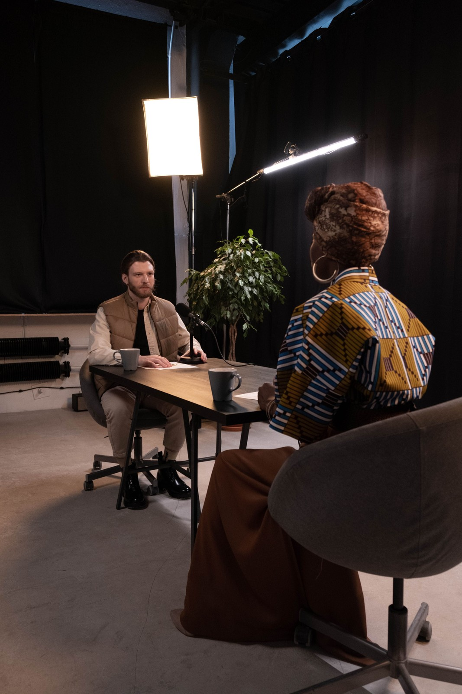
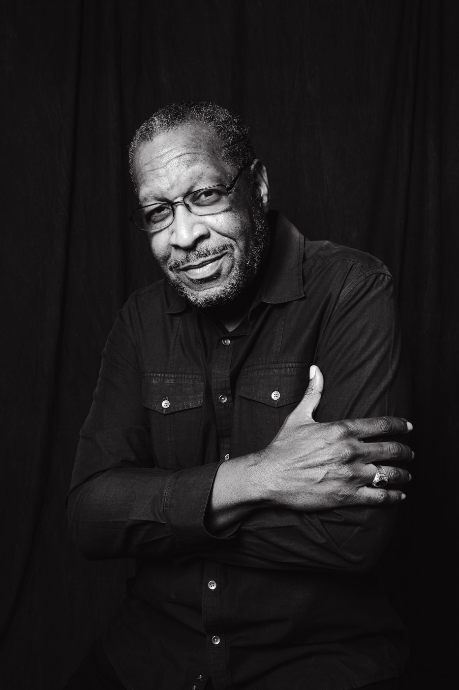

The Legacy
Project
Because a lifetime of wisdom should not disappear.
Every leader builds something that outlasts them
Almost none of it is ever written down.
The lessons, the turning points, the philosophy earned over decades — they live in one mind, and then they are gone. We exist to make sure they are not.

“We help leaders, founders and families intentionally preserve their stories, values and contributions — for the generations who come after.”
You are not buying a film.
Preservation
A life, captured before it fades.
Meaning
The lessons made plain for those who follow.
Continuity
Values that carry into the next generation.
Succession
A foundation the heirs can stand on.
Legacy
A name remembered, on purpose.
The people whose stories matter most
Retiring leaders
CEOs, country managers, development-sector and public-service leaders, university heads. Aged 55–75.
Family founders
Founders in manufacturing, real estate, agriculture and retail — long horizons, many heirs.
Institutions
Companies marking 25, 50 or 100 years. Foundations, NGOs and universities preserving memory.
Five stages, one story
Discovery
45–60 minA free conversation about why now, and what must never be forgotten.
Legacy Design
2–3 hrsWe map the life — the story blueprint and production plan.
Collection
1–3 monthsDeep interviews, family voices, archives, photos and film.
Creation
VariesBook, documentary, archive — crafted with care.
Unveiling
One eveningAn intimate gathering where the legacy is revealed.
The story is earned, not extracted.
Over weeks, we sit with the people who lived it — patiently, on their terms — until the real account emerges.
- Deep one-to-one and family interviews
- Colleague and witness accounts
- Archive review, photo & document digitisation
- Professional filming and photography

See how Laura listens.
Every Legacy Project interview is led by Laura and filmed by a professional crew. This sample shows what that looks like: the patience, the questions and the room we give a story to unfold.
Want to hear more? Soul Stories, Laura’s own series, is full of real conversations on leadership, identity and growth.
More from Soul Stories →A legacy you can hold, watch and pass on
This is what a finished legacy looks like. To show it properly, we’ve told the story of one sample storyteller across every piece of the work.
Meet our sample storyteller, Mzee Samuel Kariuki. He is a schoolteacher who went on to found a coffee growers’ cooperative, born in 1944. He is fictional, and every sample in this section is illustrative. Real work is shared only with a family’s permission.
In 1971 the long rains did not come. My father walked the rows every morning, as if looking could make the clouds gather. That was the year I learned a man cannot command the weather — only how he prepares for it. We dug the first water pans by hand: eleven families, one borrowed wheelbarrow, and a great deal of singing.
The Legacy Book
The life, written down properly. It is told in the storyteller’s own voice, shaped from many hours of interviews, illustrated with the family’s own photographs and bound to be handed on.
- Chapters drawn from the storyteller’s own words
- Family photographs and documents, carefully captioned
- Voices of family and colleagues woven through
- Designed and printed as a keepsake, not a report
The Legacy Conversation includes a shorter written profile.
The Film
The life on screen, in the storyteller’s own words, with the people who know them best. It is made to be watched together and kept for the generations who never met them.
- Filmed interviews, professionally lit and recorded
- Old photographs and home footage woven in
- Family and colleague voices
- Told in chapters, from roots to the hopes for those who come next
A story film in the Conversation, a legacy film in the Portrait, a 25–30 minute documentary in the Archive and a 30–45 minute documentary for institutions.
Short Films
One story, one lesson, a minute or two long. They are made to be shared in the family WhatsApp group, posted on a milestone birthday or played at a gathering.
- Cut from the main interviews
- Shaped for phones and sharing
- Each one stands on its own
The Digital Archive
Everything we gathered, kept safe in one private place. Nothing that was recorded or found is lost once the book and film are finished.
- The full interview recordings
- Digitised photographs, letters and documents
- The finished film and book
- Kept for the family, not published
at the unveiling of
- 6.30Arrival & welcome
- 7.00Premiere of the film
- 7.40Reflections from the family
- 8.00Presentation of the book
- 8.15Dinner
The Unveiling
One evening when family and friends gather and hear the life told whole, often for the very first time. It is the moment the whole project builds towards.
- Invitations and programme designed to match the book
- A premiere screening of the film
- The book presented to the storyteller and family
- Room for the family’s own reflections
A room of family and friends, hearing a life told whole — often for the very first time.
Choose the scope that fits the life
Legacy Conversation
- 1 × 2-hour interview
- 1 story film + 2 short cuts
- 1,500–2,000 word profile
- Digital archive
Legacy Portrait
- 4 × 90-minute interviews
- Legacy film + 2 short films
- Professional photography session
- 5,000–7,000 word legacy book
- Digital archive
Legacy Archive
- 6–8 interviews, family voices included
- 25–30 minute documentary
- 10,000–15,000 word legacy book
- Digital archive, expanded
Legacy Institution
- 8–12 stakeholder interviews
- 30–45 minute documentary
- Heritage & legacy book
- Institutional digital archive
See everything that arrives
Pick a package, add anything you’d like, and see the whole legacy laid out. We’ll shape the final scope with you at the Legacy Design session.
Legacy Portrait
Discuss this on a Discovery CallA boutique team, fully devoted to your story
Laura
Discovery, deep interviews and narrative — the trusted hand the client works with directly.
Diana
Coordination, scheduling, budgets and family liaison — she makes the experience effortless.
Andrew
Editing, archive management and distribution — the keeper of every asset and clip.
We’re selecting a small number of founding families for 2026.
The Legacy Project is boutique by design — a handful of engagements at a time, so every story gets the attention it deserves. Founding clients help shape the experience and are the first to be honoured with a full Unveiling evening.
- Direct access to Laura throughout the process
- First priority on scheduling and delivery
- A say in shaping their own Legacy Design
- The first Unveiling evening of the season
Everybody is interesting.
And some stories are too important to be lost.
What clients ask before we begin
Some stories are too important to be lost.
Book a free Discovery Call — 45 minutes, no obligation.
Prefer to write first? Fill in the form and we'll reach out to schedule your Discovery Call.